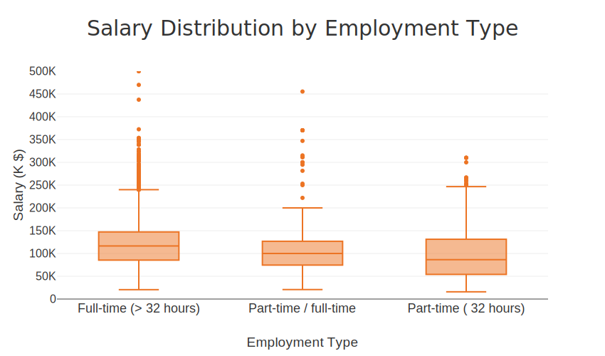

import pandas as pd
import plotly.express as px
import plotly.io as pio
#pio.renderers.default = "svg"
from pyspark.sql import SparkSession
import re
import numpy as np
import plotly.graph_objects as go
from pyspark.sql.functions import col, split, explode, regexp_replace, transform, when
from pyspark.sql import functions as F
from pyspark.sql.functions import col, monotonically_increasing_id
import os
# Set random seed
np.random.seed(42)
# Change Plotly renderer for notebooks
pio.renderers.default = "notebook"Assignment 03
1 Import Packages
2 Plotly Templete
pio.templates["nike"] = go.layout.Template(
# LAYOUT
layout = {
# Fonts
# Note - 'family' must be a single string, NOT a list or dict!
'title':
{'font': {'family': 'HelveticaNeue-CondensedBold, Helvetica, Sans-serif',
'size':30,
'color': '#333'}
},
'font': {'family': 'Helvetica Neue, Helvetica, Sans-serif',
'size':16,
'color': '#333'},
# Colorways
'colorway': ['#ec7424', '#a4abab'],
# Keep adding others as needed below
'hovermode': 'x unified'
},
# DATA
data = {
# Each graph object must be in a tuple or list for each trace
'bar': [go.Bar(texttemplate = '%{value:$.2s}',
textposition='outside',
textfont={'family': 'Helvetica Neue, Helvetica, Sans-serif',
'size': 20,
'color': '#FFFFFF'
})]
}
)
# Make Nike the default for BOTH PX and GO:
px.defaults.template = "nike"
pio.templates.default = "nike"3 Load Dataset
# Initialize Spark Session
spark = SparkSession.builder.appName("LightcastData").getOrCreate()
# Load Data
df = spark.read.option("header", "true").option("inferSchema", "true").option("multiLine","true").option("escape", "\"").csv("/home/ubuntu/assignment-03-Sabrina1211/data/lightcast_job_postings.csv")
df.createOrReplaceTempView("job_postings")
#df.printSchema() # comment this line when rendering the submission
#df.show(5)[Stage 14:> (0 + 1) / 1] 4 Data Preparation
# Step 1: Casting Salary and experience columns
df = df.withColumn("SALARY", col("SALARY").cast("float")) \
.withColumn("SALARY_FROM", col("SALARY_FROM").cast("float")) \
.withColumn("SALARY_TO", col("SALARY_TO").cast("float")) \
.withColumn("MIN_YEARS_EXPERIENCE", col("MIN_YEARS_EXPERIENCE").cast("float")) \
.withColumn("MAX_YEARS_EXPERIENCE", col("MAX_YEARS_EXPERIENCE").cast("float"))
# Step 2: Computing medians for salary columns
def compute_median(sdf, col_name):
q = sdf.approxQuantile(col_name, [0.5], 0.01)
return q[0] if q else None
median_from = compute_median(df, "SALARY_FROM")
median_to = compute_median(df, "SALARY_TO")
median_salary = compute_median(df, "SALARY")
print("Medians:", median_from, median_to, median_salary)
# Step 4: Imputing missing salaries, but no experience
df = df.fillna({
"SALARY_FROM": median_from,
"SALARY_TO": median_to,
})
# Step 5: Computing Average Salary
df = df.withColumn("Average_Salary", (col("SALARY_FROM") + col("SALARY_TO")) /2)
# Step 6: Selecting required columns
export_cols = [
"EDUCATION_LEVELS_NAME",
"REMOTE_TYPE_NAME",
"MAX_YEARS_EXPERIENCE",
"Average_Salary",
"SALARY",
"LOT_V6_SPECIALIZED_OCCUPATION_NAME"
]
df_selected = df.select(*export_cols)
# Step 7: Saving to csv
pdf = df_selected.toPandas()
pdf.to_csv("./data/lightcast_cleaned.csv", index=False)
print("Data cleaning complete. Rows retained:", len(pdf))[Stage 15:> (0 + 1) / 1] [Stage 16:> (0 + 1) / 1] [Stage 17:> (0 + 1) / 1] Medians: 87295.0 130042.0 115024.0[Stage 18:> (0 + 1) / 1] Data cleaning complete. Rows retained: 724985 Salary Distribution Employment Type
# Salary Distribution Employment Type
os.makedirs("figures", exist_ok=True)
pdf = (
df.select("EMPLOYMENT_TYPE_NAME", F.col("SALARY").cast("double").alias("SALARY"))
.filter((F.col("SALARY").isNotNull()) & (F.col("SALARY") > 0))
.toPandas()
)
pdf["EMPLOYMENT_TYPE_NAME"] = (
pdf["EMPLOYMENT_TYPE_NAME"].astype("string").fillna("Unknown")
.str.replace(r"[^\x00-\x7F]+", "", regex=True).str.strip()
)
sorted_employment_types = (
pdf.groupby("EMPLOYMENT_TYPE_NAME")["SALARY"].median()
.sort_values(ascending=False).index
)
pdf["EMPLOYMENT_TYPE_NAME"] = pd.Categorical(
pdf["EMPLOYMENT_TYPE_NAME"],
categories=sorted_employment_types,
ordered=True
)
fig = px.box(
pdf,
x="EMPLOYMENT_TYPE_NAME",
y="SALARY",
title="Salary Distribution by Employment Type",
points="outliers" # template will set color/style
)
fig.update_layout(
xaxis=dict(title="Employment Type",
categoryorder="array",
categoryarray=sorted_employment_types.tolist(),
tickfont=dict(size=18)),
yaxis=dict(title="Salary (K $)", range=[0, 500000],
tickvals=[0, 50_000, 100_000, 150_000, 200_000, 250_000, 300_000, 350_000, 400_000, 450_000, 500_000],
ticktext=["0","50K","100K","150K","200K","250K","300K","350K","400K","450K","500K"]),
font=dict(family="Arial", size=16),
showlegend=False,
height=500, width=850
)
fig.write_html("figures/DistributionEmploymentType.html")
fig.write_image("figures/DistributionEmploymentType.svg", width=850, height=500, scale=1)[Stage 19:> (0 + 1) / 1] 
The graph shows how full-time jobs are more likely to have higher pay than part-time work. Yet, there are some part-time jobs that have a relatively wide wage range, where some people earn as much as full-time employees.
6 Salary Distribution by Industry
pdf = df.select("NAICS2_NAME", "SALARY").toPandas()
fig = px.box(
pdf,
x="NAICS2_NAME",
y="SALARY",
title="Salary Distribution by Industry",
color_discrete_sequence=["#EF553B"]
)
fig.update_layout(template="nike")
# rotate x-axis labels for readability
fig.update_xaxes(tickangle=45)
# fig.show()
fig.write_html("figures/DistributionIndustry.html")
fig.write_image("figures/DistributionIndustry.svg", width=1000, height=600, scale=2)[Stage 20:> (0 + 1) / 1] 
This chart highlights the large differences in pay between industries. Industries like Information and Finance/Insurance have higher median pay and a wide range of pay. On the other hand, industries like education and retail normally have lower pay which are more concentrated.
7 Salary Analysis by ONET Occupation Type (Bubble Chart)
# Step 1: Spark SQL - Median salary and job count per TITLE_NAME
salary_analysis = spark.sql("""
SELECT
LOT_OCCUPATION_NAME AS Occupation_Name,
PERCENTILE(SALARY, 0.5) AS Median_Salary,
COUNT(*) AS Job_Postings
FROM job_postings
GROUP BY LOT_OCCUPATION_NAME
ORDER BY Job_Postings DESC
LIMIT 10
""")
# Step 2: Convert to Pandas DataFrame
salary_pd = salary_analysis.toPandas()
salary_pd.head()[Stage 21:> (0 + 1) / 1] | Occupation_Name | Median_Salary | Job_Postings | |
|---|---|---|---|
| 0 | Data / Data Mining Analyst | 95250.0 | 30057 |
| 1 | Business Intelligence Analyst | 125900.0 | 29445 |
| 2 | Computer Systems Engineer / Architect | 157600.0 | 8212 |
| 3 | Business / Management Analyst | 93650.0 | 4326 |
| 4 | Clinical Analyst / Clinical Documentation and ... | 89440.0 | 261 |
fig = px.scatter(
salary_pd,
x="Occupation_Name",
y="Median_Salary",
size="Job_Postings",
title="Salary Analysis by LOT Occupation Type (Bubble Chart)",
labels={
"Occupation_Name": "LOT Occupation",
"Median_Salary": "Median Salary",
"Job_Postings": "Number of Job Postings",
},
hover_name="Occupation_Name",
size_max=60,
width=1000,
height=600,
color="Job_Postings",
color_continuous_scale="Plasma",
)
# Step 4: Layout customization
fig.update_layout(
font_family="Arial",
font_size=14,
title_font_size=25,
xaxis_title="LOT Occupation",
yaxis_title="Median Salary",
plot_bgcolor="white",
xaxis=dict(
tickangle=-45,
showline=True,
linecolor="black",
),
yaxis=dict(
showline=True,
linecolor="black",
),
)
# Step 5: Show and export
#fig.show()
fig.write_html("figures/salaryAnalsisbyLotOccupation.html")
fig.write_image("figures/salaryAnalysisbyLotOccupation.svg", width=1000, height=600, scale=1)The bubble chart shows that occupations like Data Analysts and Business Intelligence Analysts have the highest number of job postings. However, Computer Systems Engineers/Architects stand out with the highest median salary, even though there are fewer postings compared to other roles.
8 Salary by Education Level
# Map raw education text into 4 groups
df_edu = (
df.withColumn(
"EDU_GROUP",
F.when(F.col("EDUCATION_LEVELS_NAME").rlike("(?i)Associate|GED|No Education Listed|High school"), "Associate or Lower")
.when(F.col("EDUCATION_LEVELS_NAME").rlike("(?i)Bachelor"), "Bachelor")
.when(F.col("EDUCATION_LEVELS_NAME").rlike("(?i)Master"), "Masters")
.when(F.col("EDUCATION_LEVELS_NAME").rlike("(?i)PhD|Doctorate|professional degree"), "PhD")
.otherwise(None)
)
.filter(
F.col("EDU_GROUP").isNotNull()
& F.col("MAX_YEARS_EXPERIENCE").isNotNull()
& F.col("Average_Salary").isNotNull()
& (F.col("MAX_YEARS_EXPERIENCE") > 0)
& (F.col("Average_Salary") > 0)
)
)
pdf_edu = df_edu.select(
F.col("MAX_YEARS_EXPERIENCE").alias("Experience"),
F.col("Average_Salary").alias("Average_Salary"),
F.col("EDU_GROUP").alias("Education Group"),
F.col("LOT_V6_SPECIALIZED_OCCUPATION_NAME").alias("Occupation Name")
).toPandas()
# Show table first
from IPython.display import display
tbl = (
pdf_edu[["Experience","Average_Salary","Education Group","Occupation Name"]]
.rename(columns={"Experience":"MAX_EXPERIENCE","Average_Salary":"AVERAGE_SALARY",
"Education Group":"EDU_GROUP","Occupation Name":"OCCUPATION_NAME"})
.head(5)
)
display(
tbl.style
.format({"AVERAGE_SALARY": "${:,.0f}", "MAX_EXPERIENCE": "{:.1f}"})
.hide(axis="index")
)
# Plot (nike template)
order = ["Associate or Lower","Bachelor","Masters","PhD"]
fig1 = px.scatter(
pdf_edu,
x="Experience",
y="Average_Salary",
color="Education Group",
category_orders={"Education Group": order},
title="Experience vs Salary by Education Level",
labels={"Experience":"Years of Experience", "Average_Salary":"Average Salary (USD)"},
template="nike",
opacity=0.8
)
# Soft beige frame + light plotting area + subtle grid
fig1.update_layout(
paper_bgcolor="#FFF5DC", # outer background (around the plot)
plot_bgcolor="#f9f9f9", # inner plotting area
margin=dict(l=60, r=60, t=80, b=70),
xaxis=dict(
tickmode="linear", dtick=1,
gridcolor="rgba(0,0,0,0.12)", # light grid
zeroline=False
),
yaxis=dict(
gridcolor="rgba(0,0,0,0.12)",
zeroline=False
),
legend=dict(
bgcolor="rgba(255,245,220,0.7)", # optional: match the frame
bordercolor="#E6D9B6", borderwidth=1
)
)
fig1.update_traces(marker=dict(size=6, opacity=0.8))
# Show the chart
#fig1.show()
fig1.write_html("figures/SalaryEducationLevel.html")
fig1.write_image("figures/SalaryEducationLevel.svg", width=1000, height=600, scale=1)[Stage 24:> (0 + 1) / 1] | MAX_EXPERIENCE | AVERAGE_SALARY | EDU_GROUP | OCCUPATION_NAME |
|---|---|---|---|
| 2.0 | $108,668 | Bachelor | General ERP Analyst / Consultant |
| 3.0 | $108,668 | Associate or Lower | Oracle Consultant / Analyst |
| 7.0 | $108,668 | Associate or Lower | General ERP Analyst / Consultant |
| 2.0 | $92,962 | Bachelor | Data Analyst |
| 5.0 | $108,668 | Associate or Lower | Data Analyst |
The chart shows that salaries generally increase with more years of experience across all education levels. Higher education levels, like Masters and PhD, tend to earn slightly more, but there is overlap with Bachelors and Associate degrees.
9 Salary by Remote Work Type
# Normalize strings and map to 3 buckets
# Build Remote / Hybrid / Onsite groups
df_remote = (
df.withColumn("REMOTE_NORM", F.lower(F.trim(F.col("REMOTE_TYPE_NAME"))))
.withColumn(
"REMOTE_GROUP",
F.when(F.col("REMOTE_NORM").rlike(r"hyb|mix|both|partial|split|combo"), "Hybrid")
.when(F.col("REMOTE_NORM").rlike(r"remote|wfh|home|tele"), "Remote")
.otherwise("Onsite")
)
.drop("REMOTE_NORM")
.filter(
F.col("MAX_YEARS_EXPERIENCE").isNotNull() &
F.col("Average_Salary").isNotNull() &
(F.col("MAX_YEARS_EXPERIENCE") > 0) &
(F.col("Average_Salary") > 0)
)
)
pdf_remote = df_remote.select(
F.col("MAX_YEARS_EXPERIENCE").alias("Experience"),
F.col("Average_Salary").alias("Average_Salary"),
F.col("REMOTE_GROUP").alias("Remote Work Type"),
F.col("LOT_V6_SPECIALIZED_OCCUPATION_NAME").alias("Occupation Name")
).toPandas()
# Preview table (top 5)
from IPython.display import display
display(
(pdf_remote[["Experience","Average_Salary","Remote Work Type","Occupation Name"]]
.rename(columns={"Experience":"MAX_YEARS_EXPERIENCE",
"Average_Salary":"AVERAGE_SALARY",
"Remote Work Type":"REMOTE_GROUP",
"Occupation Name":"OCCUPATION_NAME"})
.head(5)
.style.format({"AVERAGE_SALARY":"${:,.0f}", "MAX_YEARS_EXPERIENCE":"{:.1f}"})
.hide(axis="index"))
)
order = ["Onsite", "Remote", "Hybrid"]
color_map = {"Onsite":"#1f77b4", "Remote":"#ff7f0e", "Hybrid":"#2ca02c"}
fig_remote = px.scatter(
pdf_remote,
x="Experience",
y="Average_Salary",
color="Remote Work Type",
category_orders={"Remote Work Type": order},
color_discrete_map=color_map,
title="Experience vs Salary by Remote Work Type",
labels={"Experience":"Years of Experience", "Average_Salary":"Average Salary (USD)"},
template="nike",
opacity=0.8
)
# match your education layout exactly
fig_remote.update_layout(
paper_bgcolor="#E8F5E9",
plot_bgcolor="#F1FAF1",
margin=dict(l=60, r=60, t=80, b=70),
xaxis=dict(
tickmode="linear", dtick=1,
gridcolor="rgba(0,0,0,0.12)",
zeroline=False
),
yaxis=dict(
gridcolor="rgba(0,0,0,0.12)",
zeroline=False
),
legend=dict(
bgcolor="rgba(232,245,233,0.8)",
bordercolor="#A5D6A7", borderwidth=1,
title_text="Remote Work Type"
)
)
fig_remote.update_traces(marker=dict(size=6, opacity=0.8, line=dict(width=0)))
# Show
# fig_remote.show()
fig_remote.write_html("figures/RemoteWorkType_scatter.html")
fig_remote.write_image("figures/RemoteWorkType_scatter.svg", width=1000, height=600, scale=1)[Stage 25:> (0 + 1) / 1] | MAX_YEARS_EXPERIENCE | AVERAGE_SALARY | REMOTE_GROUP | OCCUPATION_NAME |
|---|---|---|---|
| 2.0 | $108,668 | Onsite | General ERP Analyst / Consultant |
| 3.0 | $108,668 | Remote | Oracle Consultant / Analyst |
| 7.0 | $108,668 | Onsite | General ERP Analyst / Consultant |
| 2.0 | $92,962 | Onsite | Data Analyst |
| 5.0 | $108,668 | Remote | Data Analyst |
The chart shows that salaries increase slightly with more years of experience, regardless of remote work type. Onsite, remote, and hybrid roles have similar salary patterns, though onsite jobs appear more common across the data.